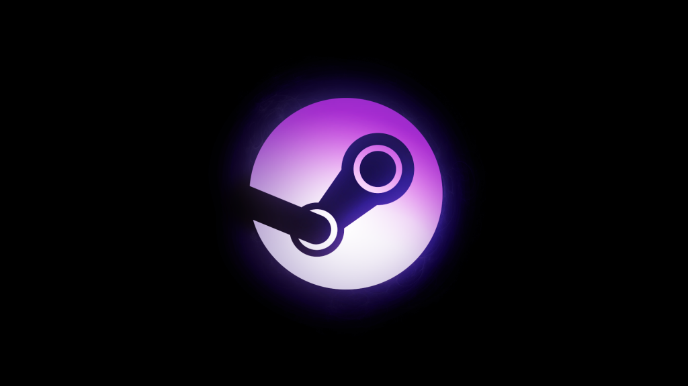
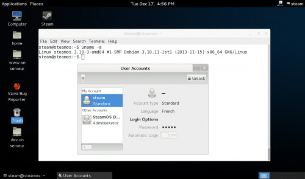
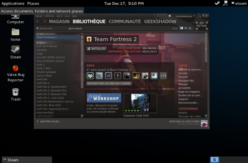
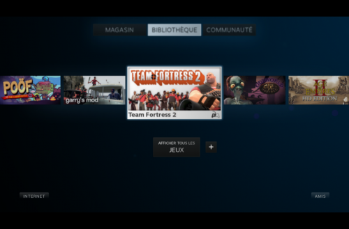

18 décembre 2013
Test rapide de SteamOS

Il y a quelques temps je parlais dans un article de SteamOS et de leurs machines. Malheureusement suite à des problèmes logistiques, Valve a décidé de distribuer ses 300 machines bêta uniquement aux États-Unis, ce qui fait que je n'aurais pas la chance de pouvoir mettre la main dessus ;) (Différents unboxing en photos/vidéos sont disponibles sur le net). Cependant, Valve a aussi publié la première version de son système d'exploitation SteamOS. Baptisée «Alchemist» cette première mouture propose une distribution GNU/Linux basée sur Debian 7.1 «Wheezy» pour processeur 64-bits avec une prise en charge uniquement des cartes mère possédant l'UEFI. J'ai testé le système rapidement pour vous dans une machine virtuelle grâce à ce tutoriel. Le système est de base installé en anglais et il est possible de configurer le clavier en Azerty ou autre. Steam est installé en version classique, mais aussi en version «Big Picture», ce qui permet de démarrer directement le système comme si vous allumiez une console de jeu de salon. Je n'ai pas testé de manette ni de jeu, j'ai plutôt regardé à quoi ressemblait le système. Certains paquets récents de Debian ont été «backportés» et Valve a inclus les derniers pilotes pour les cartes graphiques nVidia et AMD (ATI). Côté session utilisateur on retrouve du Gnome 3.4.2, le navigateur Internet par défaut est IceWeasel 17.0.10 qui correspond à l'ancienne version ESR de Firefox mais il est aussi possible de surfer grâce au navigateur Internet intégré de Steam (basé sur WebKit). Il n'y a pas de lecteur multimédia installé par défaut, mais il y a fort à parier qu'il sera inclus dans Steam prochainement pour lire tout type de contenu (films, musique, podcasts...). Il n'y a pas de logithèque disponible avec des paquets téléchargeables supplémentaires, sûrement car les logiciels seront délivrés directement via Steam aussi. Deux utilisateurs sont disponibles de base : steam (mot de passe "steam") compte normal et desktop (mot de passe "desktop") qui est le compte Administrateur.


Je pense que Valve a fait le bon choix en choisissant Debian, la distribution est très stable et légère. On aurait pu croire qu'ils auraient choisi de se baser sur Ubuntu, mais ce n'est plus vraiment un modèle en terme de légèreté et Canonical essaie de garder la main sur sa distribution. Valve a ouvert un compte dédié sur GitHub pour gérer les différents problèmes remontés : https://github.com/ValveSoftware/SteamOS J'ai pour ma part demandé si Valve comptait inclure une version officielle de Firefox plutôt qu'IceWeasel ;) J'ai fait un petit pack si vous désirez récupérer les fonds d'écrans de SteamOS.



Commentaires 0
Aucun commentaire.